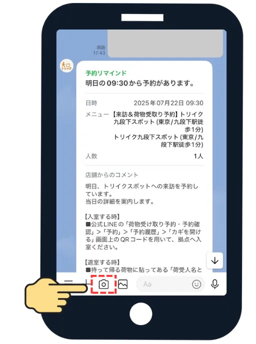
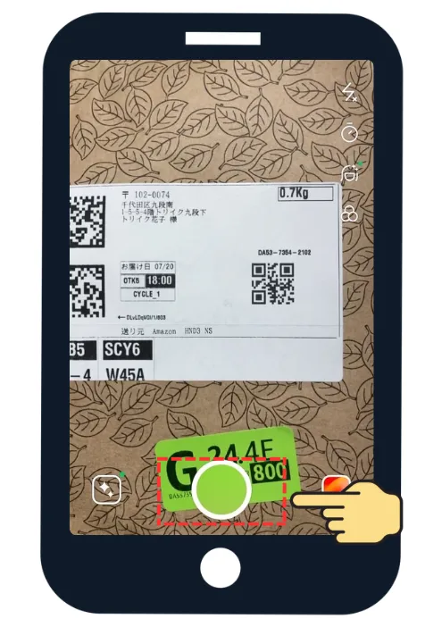
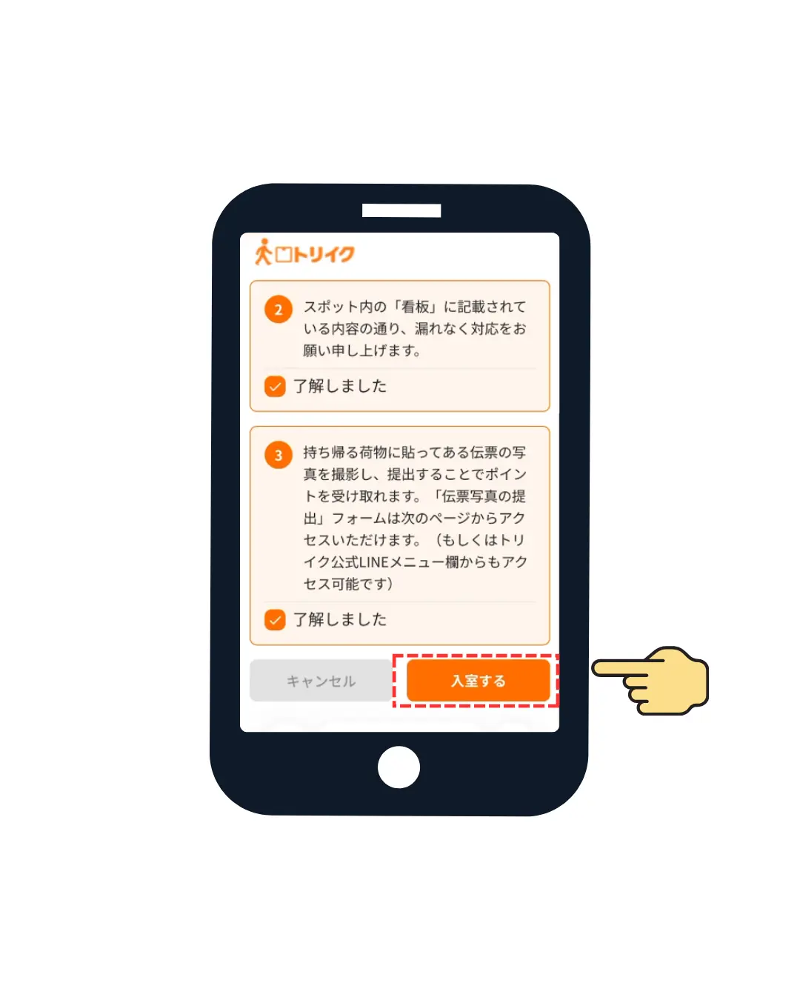
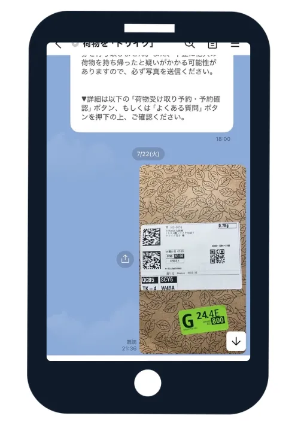
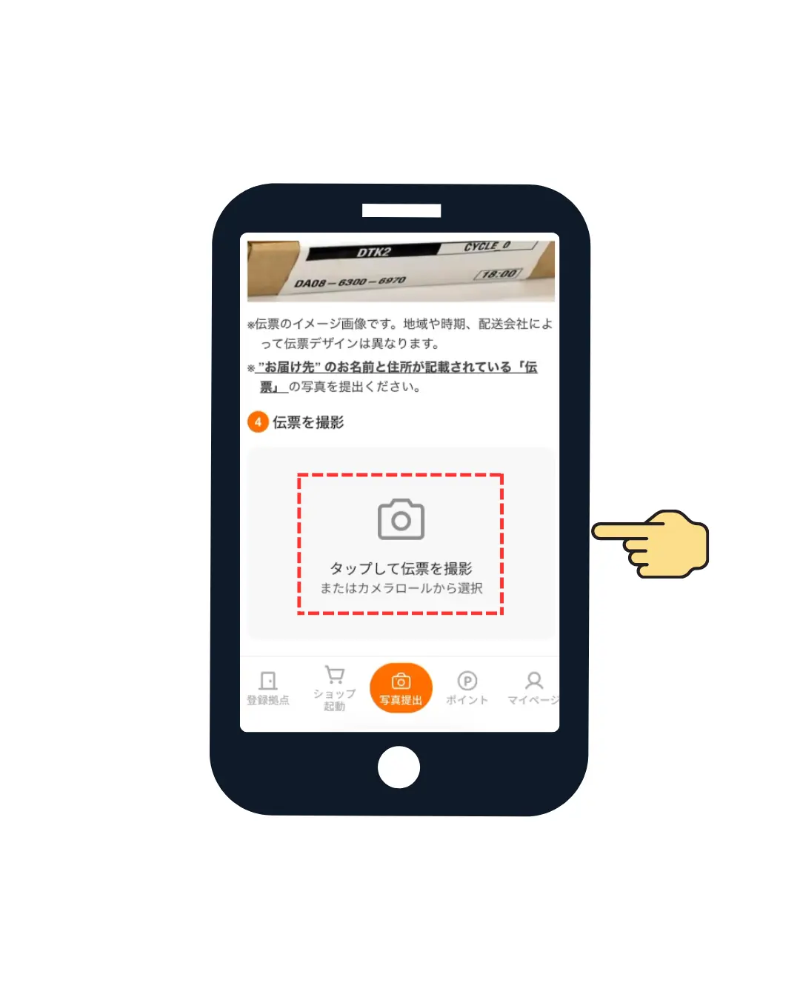
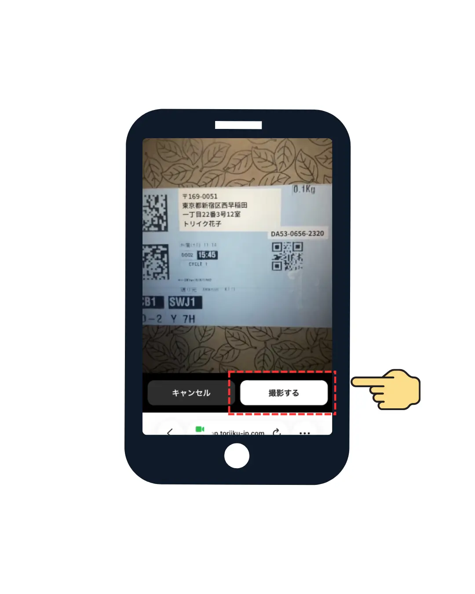
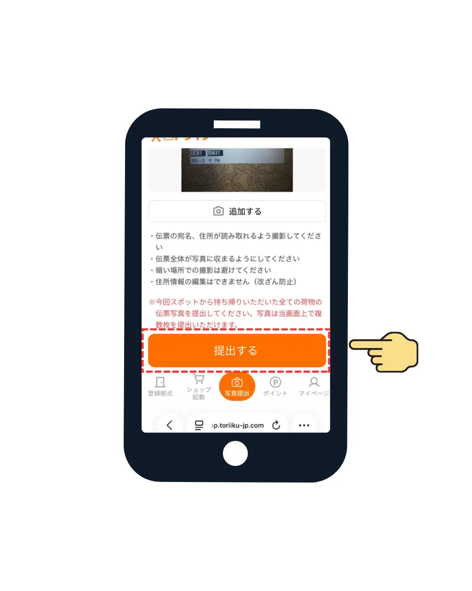

トリイクスポット
ご利用ガイド
知りたい手順のボタンをタップすると、詳しい流れが表示されます。
STEP 01
QRコードを読み込む
入室するスポットのドアにあるQRコードを、通常のスマホのカメラで読み込んでください。

STEP 02
重要事項・注意事項の確認
入室のための確認事項が表示されます。注意事項をすべて確認の上、「了解しました」にチェックを入れます。

STEP 03
入室するボタンを押して開錠
すべて確認し終えたら、画面下部の「入室する」ボタンを押すと、スマートロックのキーが開きます。

STEP 01
写真提出ボタンをタップ
トリイクのアプリ画面下部にあるオレンジ色の「写真提出」ボタンをタップします。

STEP 02
拠点と配送業者を選択
今回お荷物を受け取られた「拠点（スポット）」を選択し、続けて「配送業者」を選択します。
「タップして伝票を撮影またはカメラロールから選択」の箇所を押します。

STEP 03
伝票写真を撮影
お荷物の伝票（宛名・住所が読み取れる状態）を撮影します。

STEP 04
提出して完了
撮影した写真を確認し、問題がなければ「提出する']ボタンを押すと手続きが完了します。
